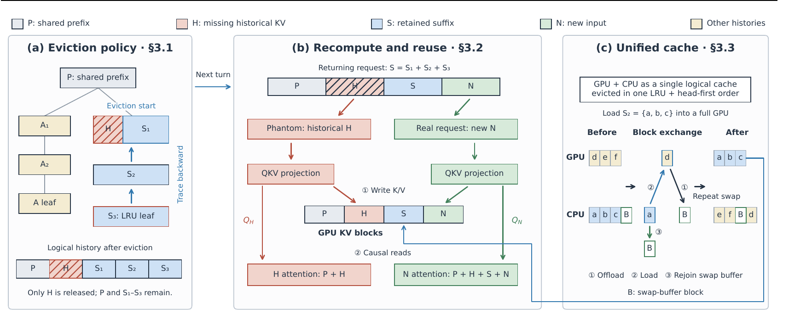

Contents · 8 sections
1What problem is it solving?2Why not simply delete from the start?3How Penelope works: three parts4How well does it work?5Where does the gain come from?6Limitations as I see them7How an inference team could try it8VerdictSHARE
Teams that run LLM inference, especially for coding-agent traffic, should read this. This paper points out that when the KV cache runs out of room, SGLang and vLLM delete from the end of a cached history, and the end is exactly the part that is most expensive to recompute. The authors' system, Penelope, does the opposite: it keeps the opening shared by many sessions and deletes from the front of the remaining private history, keeping the later part. The core idea in one sentence: freeing the same space by deleting early tokens is much cheaper to recompute than deleting late tokens. The paper first measures a single request: deleting 30% of the cache in a 128K context starting at position 2K instead of from the end makes the next request 2.93 times faster. On real Claude Code traces, compared with stock SGLang, Penelope cuts mean time to first token by 36% to 60% with a GPU-only cache. With CPU memory as a second cache tier the cut is 46% to 76%, against an SGLang whose scheduler also counts CPU-cached prefixes.
What problem is it solving?
Start with how agent traffic differs from ordinary chat. A coding agent sends dozens or hundreds of requests to finish one task, and each request carries the whole earlier conversation and tool results, so the same history is reused turn after turn and keeps growing. The paper counts 665K Claude and Codex requests in the TraceLab dataset: the median input is about 132K tokens, and 79% exceed 64K.
Serving engines keep a request's KV cache after it finishes, so the next request can reuse it when its prefix matches. GPU memory cannot hold every session's history, so something has to go. Two choices are made: which history to delete from, and which part of it. Mainstream engines pick the least recently used history with LRU and then delete from its end. The reason is simple: prefix caching only matches contiguously from the start, so keeping the start lets later requests that branch off still share it.
The trouble is the cost of recomputation. A deleted token must be run through the model again when it is needed. Under causal attention each token attends to every token before it, so the later a token sits, the more it costs to recompute. Linear layers and the FFN cost about the same per token; the whole difference is in attention.
An illustrative example shows the size of the gap. In one agent session the first 16K tokens are the system prompt and tool definitions shared by all sessions, the next 100K are this session's own history, and 30K tokens of space must be freed (illustrative).
| Deletion (illustrative) | Positions deleted | Recompute cost from the paper's formula |
|---|---|---|
| From the end (SGLang) | 86K to 116K | about 3.74 billion units |
| From the start of the private history (Penelope) | 16K to 46K | about 1.64 billion units |
This uses the cost formula in Section 2.2 of the paper, where one unit is one query-key attention pair. For Qwen3-8B, a token's linear-layer and FFN work equals about 23,552 units and does not depend on position. When a token is recomputed, its attention work equals the number of tokens before it. Both choices recompute the same number of tokens, so the linear part is identical and the gap is the attention term. Each token deleted from the end attends to 86K to 116K earlier tokens, about 101K on average. Each token deleted from the front attends to only 16K to 46K, about 31K on average. Deleting from the end costs about 2.3 times as much (the example counts 1K as 1000). This is lower than the 2.93 times measured below, because here deletion starts after a 16K shared prefix rather than at position 2K, and only the restored segment is counted.
The paper measures this on one H100 with Qwen3-8B. After caching a full history, it deletes about 30% of the tokens, either a segment starting at position 2K or from the end, appends 512 new tokens, and times the next request. Both cases recompute the same number of tokens. Deleting from 2K is only 1.14 times faster at 8K context but 2.93 times faster at 128K. The cost formula predicts these speedups within 4%.

Why not simply delete from the start?
The idea is simple; making it work has three traps.
First, the start is often shared. In the Claude Code traces the paper uses, the first 15.6K tokens or so are a system prompt and tool definitions common to all sessions. Deleting them forces other sessions to recompute. KV that a running request needs cannot be deleted either.
Second, deleting from the start leaves a hole in the middle of the history: an earlier segment is gone while a later one remains. SGLang's prefix matching stops at the first missing piece and never finds the part kept behind it. Execution changes too: instead of computing only new tokens after a cached prefix, the engine must compute two ranges, the old tokens in the hole and the newly appended tokens.
Third, with CPU memory as a second tier, each tier deleting on its own can scramble the order. For example, the GPU moves a segment to a full CPU cache, and the CPU side, following its own rule, deletes the later part of the same history while the GPU still holds the earlier part. That is again deleting the expensive part and keeping the cheap part.
How Penelope works: three parts
The overview figure matches the three parts: (a) where to delete, (b) how the next request restores the deleted segment, and (c) how the GPU and CPU tiers share one deletion order.

Part one: find the earliest deletable position and free only the needed blocks
SGLang stores all cached histories in a radix tree: a prefix shared by several sessions is a common path, and each node holds a contiguous run of tokens, their KV locations, and a count of running requests that use it.
When space runs out, Penelope still uses LRU to pick the least recently used history, which is a leaf of the tree. It walks from that leaf toward the root and stops when one of four things holds: the parent is the root; the parent has several children, so everything above is a shared prefix; the parent is in use by a running request; or the parent's KV has already been deleted. The node where it stops is the earliest deletable position in this private history.
Next it controls how much to delete. SGLang frees whole nodes, and a node near the start may hold an entire initial prompt, so one deletion can free far more than needed and cause extra recomputation later. Penelope splits nodes at KV-block boundaries (64 tokens per block in the paper's setup) and frees only the leading blocks it needs. In the paper's Figure 3, three blocks must be freed and the starting node has eight, so it splits the node, frees the first three, and keeps the other five. If that is not enough, it continues in order.
Part two: restore the hole with a phantom request
When deleting, Penelope frees only the KV storage. The node's tokens and parent-child links stay, and the node is marked as missing its KV. When the next request arrives, prefix matching walks down the tree and continues through missing nodes as long as the tokens match, so it finds the segment kept behind the hole and knows which segment to recompute.
Recomputation is done by a phantom request. It is an internal request that Penelope creates; it only runs prefill and produces no output, and its job is to rebuild the KV of the old tokens in the hole. The real request computes only the newly appended tokens. Both keep their tokens' original positions and run in the same batch.
Why the same batch? In every layer, the batch's K/V are written to the cache before attention is computed. The phantom request writes the missing K/V in that layer. When the real request computes attention in the same layer, it reads the just-restored segment, the shared prefix before it and the kept segment after it. The real request does not have to wait for the phantom request to finish a full pass through the model. Batching them adds almost no cost: with the 8B model on an H100 at 32K to 128K contexts, the baseline splits the same work into two unrelated ordinary requests, one that only fills the hole and one that only computes the real request's new tokens. Total execution time with batching is within 1% of that baseline. Attention is about 1% slower, while the rest of the forward pass is slightly faster. Hoot says

- Write first: the phantom request writes K/V for positions 2 and 3, and the real request writes K/V for position 5 (illustrative, within one layer).
- Then attention: Position 2 reads 1–2 and position 3 reads 1–3, each seeing only earlier positions; position 5 reads 1–5, because the whole history is in the cache by now.
- The next layer again writes, then reads. So the real request waits only for each layer's hole to be filled, not for the phantom request to finish the whole model.
- Why position 4's KV is still valid: only storage was freed, and the tokens at positions 2 and 3 did not change. Position 4 was originally computed from the same 1–3, so after the refill the history is the same as before.
Illustrative: 5 positions stand for one history; in practice each segment holds thousands of tokens. Only one layer is drawn, and every layer follows the same write-then-read order. Source: paper §3.2 and Figure 2(b) (the phantom request is prefill-only and recomputes the freed segment; it keeps its original positions and runs in the same batch as the real request; each layer writes the batch's K/V before attention, so the real request reads the refilled segment, the shared prefix and the kept suffix); all position numbers are illustrative.
Part three: GPU and CPU as one cache
Penelope keeps each KV segment in exactly one tier, GPU or CPU, and treats the two tiers as one logical cache, using the same LRU plus delete-from-the-start rule to decide what is finally deleted. Moving data between tiers only changes where the KV lives; only removing the last copy counts as deletion. Penelope decides what to delete first and then plans the moves, so moving data never triggers extra deletions.
When both tiers are full, loading a segment from CPU to GPU means moving another segment from GPU to CPU at the same time, yet neither side has free space. Penelope reserves a small swap buffer on the CPU (1,024 tokens in the experiments) and swaps in chunks: data leaving the GPU is written into the buffer first, the freed GPU blocks receive the data coming from the CPU, and the CPU blocks emptied this way become the buffer for the next chunk.
How well does it work?
For evaluation, the paper replays two real coding-agent trace sets: Claude Code (24 sessions, 4,688 requests, median context per turn 80K; the public records lack the initial context, so the replay fills it with synthetic tokens, 15.6K of them shared across sessions) and FreeInference (Codex-style, 48 sessions, 4,089 requests). The replay keeps N sessions running at once; each session waits for the previous reply and then for the recorded tool time before sending its next request. The models are Qwen3 8B, 32B and 235B-A22B. To create cache pressure, GPU-only runs cap the KV cache at 256K, 192K and 384K tokens for 8B, 32B and 235B. Two-tier capacities are in the table below. The baseline is stock SGLang, and both schedulers run requests with the most reusable cache first. There are two metrics: TTFT, and JCT (job completion time, the end-to-end time of a whole session).
With a GPU-only cache on the Claude Code traces, mean TTFT drops by 36% to 60% and JCT by 27% to 37%. On FreeInference with the 8B model and three or four concurrent sessions, TTFT drops by 30% and 32%, but JCT by only about 2%, because sessions in that replay spend most of their time waiting for tools, so faster prefill shortens only a small part. This shows that the gain depends on how much of a session is spent waiting for the first token.
In the two-tier runs, a smaller GPU tier is paired with an equally large CPU tier, and the cuts are larger. The paper first changes SGLang's scheduler to also count prefixes cached on the CPU, which alone cuts SGLang's TTFT by 13% to 37%. On top of this stronger baseline, Penelope cuts TTFT by a further 46% to 76%:
| Model | Concurrent sessions | GPU / CPU capacity (tokens) | Mean TTFT (s, SGLang vs Penelope) | Mean JCT (min, SGLang vs Penelope) |
|---|---|---|---|---|
| 8B | 4 | 128K / 128K | 10.4 vs 4.5 | 81 vs 50 |
| 8B | 8 | 128K / 128K | 23.5 vs 12.8 | 124 vs 79 |
| 32B | 4 | 128K / 128K | 11.0 vs 3.9 | 84 vs 47 |
| 235B-A22B | 4 | 256K / 256K | 24.2 vs 5.8 | 359 vs 142 |
The 235B model gains most for two reasons. Its 256K context lets sessions run longer (144K tokens per request on average, against 83K for 8B and 32B), so the tokens SGLang recomputes sit at later, more expensive positions. Penelope's hit-rate lead is also larger (43 points, against 29 to 30). With the same trace length and cache sizes as the smaller models, the 235B cut falls back to 49%.
Where does the gain come from?
The ablation is the most interesting part. The paper separates two things: where deletion starts (the tail of the leaf node, the head of the leaf node, or the start of the private history) and how much is deleted (a whole node, or only the needed blocks). With the 8B model and four sessions, the TTFT change relative to SGLang is:
| Deletion start | Whole node | Only needed blocks |
|---|---|---|
| Tail of the leaf node | 0% (this is SGLang) | 45% lower |
| Head of the leaf node | 12% lower | 43% lower |
| Start of the private history | 6% lower | 63% lower (Penelope) |
Where you delete only matters once you delete just the blocks you need. Deleting whole nodes often removes most of a session's private history at once; once all of it is gone, the next request must recompute it from the start, wherever deletion began. With whole-node deletion, requests that lost at least 90% of their private history account for 90% to 94% of recomputation; with block deletion, 16% to 23%.
With block deletion, starting at the head or the tail of the leaf node gives about the same result (43% vs 45% lower), because the leaf node holds the session's newest tokens and both ends sit near the end of the context. Only tracing back to the start of the private history opens the gap: the hit rate is just 1.9 points higher than tail deletion (84.5% vs 82.6%), yet TTFT goes from 45% lower to 63% lower. Hit rate alone understates the gain; what matters is which positions are kept.
Limitations as I see them
First, the gain depends on the scheduler. Under FCFS scheduling, the TTFT reduction on 235B falls from 43% to 17%. FCFS does not favor sessions whose history is still cached, so waiting sessions more often lose their whole history, and then the deletion position no longer matters. Services that use FCFS should estimate their own gain first.
Second, the cost formula assumes full causal attention in every layer. For models with sliding-window or linear attention, late tokens are not nearly as expensive to recompute, so deleting from the start helps much less. All three models tested are full-attention Qwen3 models.
Third, cache pressure sets the gain. The paper runs a separate sweep: the 8B model, eight sessions, FCFS for both systems, a fixed 128K GPU tier, and only the CPU tier size varied. With a CPU tier four times the GPU tier, SGLang also reaches a 92% hit rate and the two systems have nearly the same TTFT and JCT; with equal tiers, both miss often and TTFT drops by only 10%. The evaluation deliberately caps GPU capacity, so a real deployment should first check where its own cache pressure lies.
How an inference team could try it
- Measure your own agent traffic first: request length distribution, how long the shared prefix across sessions is, and the cache hit rate. If most contexts are short or deletion rarely happens, the gain will be small: in the paper's Figure 1, the two deletion choices differ by only 1.14 times at an 8K context.
- In SGLang, change only the deletion granularity so it frees blocks instead of whole nodes. In the ablation this step alone cut TTFT by 45%, and it is the smallest change.
- Then add tracing back to the start of the private history and phantom-request recomputation. Validate with SGLang's deterministic inference mode and greedy decoding. The paper compares Penelope with a 40K cache against a 256K cache that never deletes, and requires bit-identical outputs, including prompt log-probabilities at recomputed and reused positions.
- Add unified two-tier management last if you offload to CPU. Watch the moves when both tiers are full: in the paper's correctness run on the Claude Code trace (batch size one, 128K GPU plus 128K CPU), 602 of 763 loads back from CPU went through the swap buffer.
Verdict
Delete only the blocks you need first; then where you delete buys another big cut. Long agent contexts make "the end is most expensive" very visible, and Penelope exploits it with about 2.5K lines of Python (including diagnostics and comparison policies) and no new GPU kernels, which is the part most worth borrowing.
| Dimension | Assessment |
|---|---|
| Problem importance | High. Agent requests have a median of 132K tokens, and recomputing deleted cache directly sets time to first token |
| Novelty | Medium. Deleting from the start was proposed before (Pensieve for multi-turn chat, AsymCache weighing hit rate against position cost in vLLM); the new parts are protecting shared prefixes, same-batch recomputation and unified two-tier management |
| Evidence | Fairly strong. Three model sizes, two real trace sets, two GPU types, an ablation separating position from granularity, and bit-identical correctness checks |
| Engineering cost | Medium. About 2.5K lines of Python in SGLang's cache, scheduling and transfer modules, no new kernels |
| Worth trying | Yes. Agent services with long contexts, cache pressure and a scheduler that favors cached requests benefit most |
How did this read for you?
Hoot made a note. Thanks for the feedback.
One tap, no sign-in; tap again to undo. Only anonymous counts are kept, never who you are.
Discussion
Add experiment details, reproduction notes or a different take. Requires a GitHub sign-in.
Loading the discussion…